�V.広告
←�@1960年代の広告
�A1970〜1975年の広告
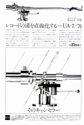 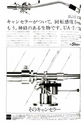 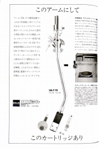 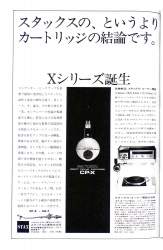 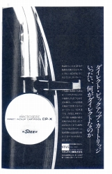
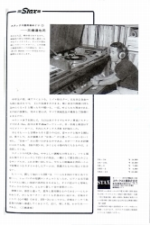 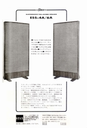 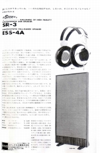 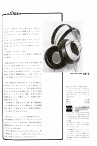 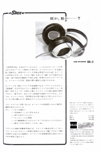
・1971年
この年、ヘッドフォンの上位機種SR-Xが登場し、2グレード体制となった。SR-3もSR-X開発で得られた膜技術をフィードバックしNEWSR-3となる。また当時のメインの接続手段であるアダプターにも上位機種SRD-7が登場する。
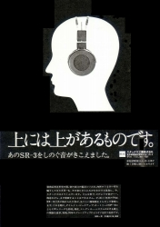 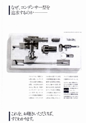 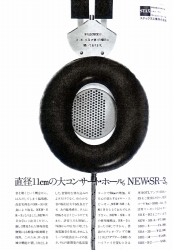 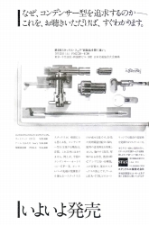 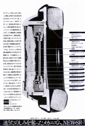
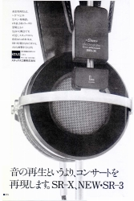 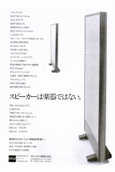 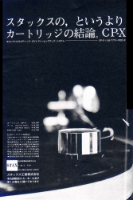 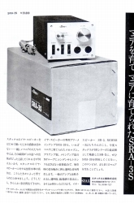 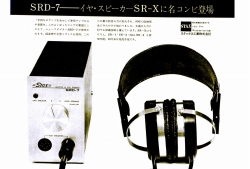
・1972年
前年に登場したSR-Xが、もうMark-2となった。膜・導電物質・固定極・防湿膜の除去など、デザイン以外、中身は全面変更である。なお防湿膜は後の時代のモデルでは復活している。また今からすれば奇妙に感じるが、この年、もっともフィーチャーされたのは、コンデンサー・トゥイーターEST-205である。
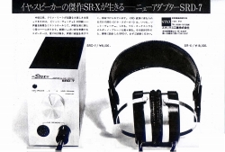 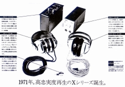 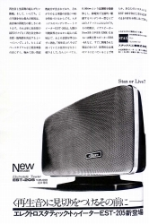 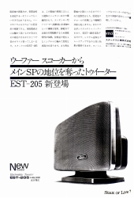
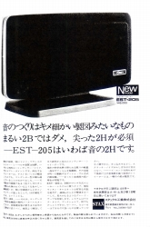 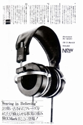 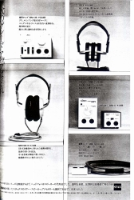 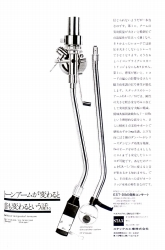
・1973年
この年は新製品の動きはなかったようだ。見かけた広告はヘッドフォン関連のものばかりだ。「スピーカー不要論」と、刺激的なコピーが目立つが、管理人自身は、旧（株式会社時代）STAXの本質は、かつてのクォードのようなコンデンサー型スピーカーメーカ・メーカーでやっていきたかったが、商業上の都合でヘッドフォンを売り、半ばやせ我慢で「イヤ・スピーカー」と呼んでいたと、考えている。さもなくば、後にあれほどアンプに力を入れなかったはずである。
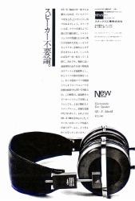 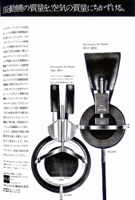 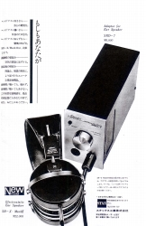 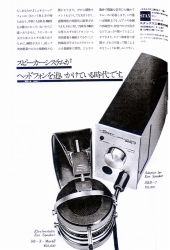 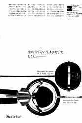
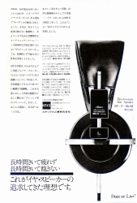 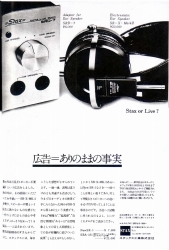 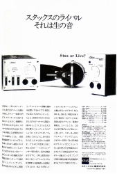 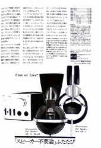
・1974年
この年の新製品は、普及タイプのアダプターSRD-6ぐらい。しかし開発中だというアンプが広告に登場している。そのうちパワーアンプDA-300は、無事、翌年デビューするが、プリアンプCA-300は、市販までいかなかったと記憶している。結局、本格的なプリアンプの登場は1978年のCA-Xとなった。
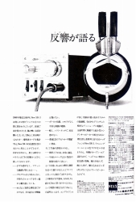 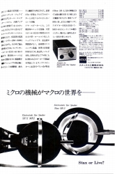 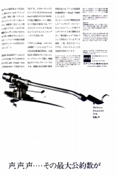 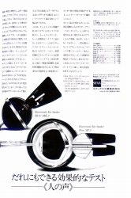 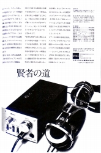
・1975年
この年は非常に新製品の多かった年であり、広告も複数の雑誌で合計13点も見つかった。ます主力であるヘッドフォンではSR-3がSR-5に、SR-XがMk2からMk3にモデルチェンジした。また同社では「普及品」扱いであるが、初のエレクトレット型であるSR-40（アダプターとセットでSR-44）がデビューしている。この機種は、後に同社のヘッドフォンで標準となる平行タイプのケーブルを最初に採用した機種だ。さらにドライブ手段ではSRA-10Sが登場し、アナログ関係ではカートリッジのCP-Xがtype2となった。なおSRA-3Sの終了で、真空管を使った製品はしばらく姿を消すことになる。また同社では初のパワーアンプDA-300がついにデビューする。
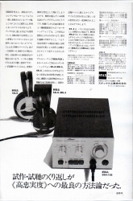 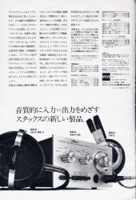 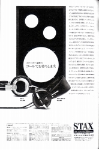 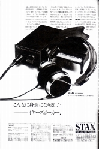
→�B1976〜1980年の広告